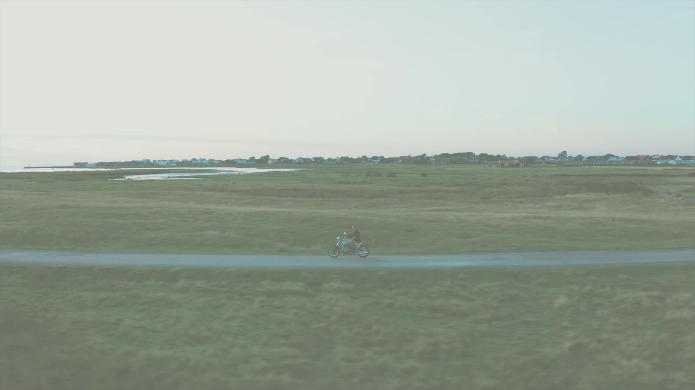
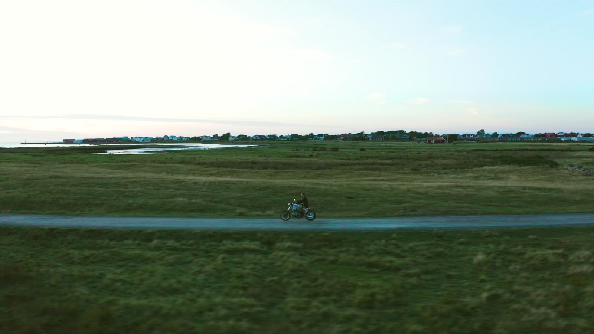

Cinematographer · Director of Photography
Nicklas Karpaty, FSF
Trusted by
What are you making?
Craft
From sensor to screen
The look is decided before the camera rolls: lens, light, exposure and a show LUT built for the story. The grade then finishes what was planned on set.
Demo: vänsterbilden är en simulerad platt bild. Byt mot en riktig LOG-ruta och den färdiga graden.


LOGGRADEDirectors and producers

About
Storytelling dictates the language
With over 20 years of experience as a cinematographer, I work across genres, letting each unique script guide the visual narrative. From international drama and award-winning festival films to premium commercial branding, my drive is to find the visual heart of every scene.
While deeply rooted in traditional craft, I navigate the cutting edge of technology. By integrating modern tools like AI-driven previsualisation into the workflow, I ensure visual clarity and creative freedom long before the camera rolls.
- 20+ yearsBehind the camera
- FSFSwedish Society of Cinematographers
- GothenburgBased in Sweden, working worldwide
- Drama to LED volumeFiction, documentary, branded, VP
Shooting on